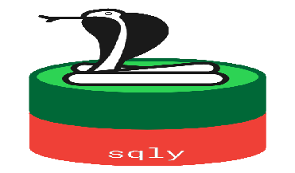
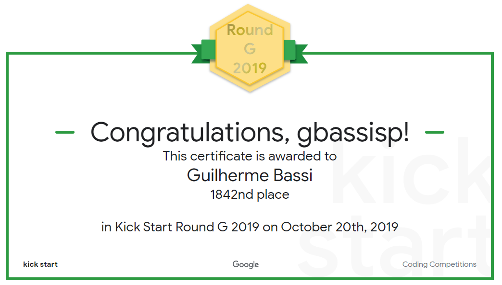

I'm a software engineer, passionate about development and a decent problem solver.
I am extremelly organised and maintain all my code properly on Github, with atomic commits and well documented code.
With emphasis on object-oriented programming, I spend most of my time programming on Python and C++,
but I my skills can be easily transfered to a different programming language.
You can check my public repositories and see it for yourself,
or first take a look on what they are all about!
Also, I am devoted on making information available, so I'm a researcher with few
publications and a wikipedia contributor when I have some time to spare. Check my work here!
Note: although most of my repos are private and you cannot see most of what I've been coding lately,
you can still check some stats about my side projects.
Recent Work
System Administration
On double role project, I am developing a cloud storage app from ground up.
Thus, using the LAMP stack, I am using only Infrastructure services to create the app
from scratch, being very careful with defining the network and creating load balancing
using kubernetes. Check out the app!
Back-end development
The majority of my spare time I spend on this specific project,
coding a web app using Flask at its core and several other
components. This project goes way
beyond a simple website. Not only it handles user access safely,
it connects all the most common engines of cloud services. It uses
kubernetes to run all the micro-services, a dedicated MySQL server
and the oh-so loved unstructured data storage, a.k.a., buckets.
Check out the responsive app here

GovHack 2019
I participated on GovHack 2019 as a personal challenge to get involved with
the community. I was the single developer on the team and I came up with the entire
code used on the project. Being a back-end dev, I made a project of getting the given data,
pre-process it and transform it into a sqlite database. The project halted after the event ended,
but it can still be made useful. This is a single weekend project, still more elegant than some
copy and paste code you see all around. Check out the repository!
Web Crawling
Amongst my projects, I have a data science related one, where I have the need
of gathering heaps of real estate data, upon which the challenge of collecting
it without any API made me opt for a simple solution. A spider to crawl through
websites without RESTful APIs to scrape all the data I need. This project relies
on several micro-services, which most of them are kept private to me due to
the company's policy, but I made the crawling service public. Check it out!
Writing
More than writing blog just to boast about writing blog
(not that there is anything wrong with it),
I am dedicated on providing information world-wide. Thus,
you can check my activities on:
Coding competitions
It might not look impressive at a first glance, but ranking on top 30% on a Google coding competition
with competitors all around the world is quite an achievement

Live stats:
A quick glance about my coding on private projects
{kind=link}
{kind=link}